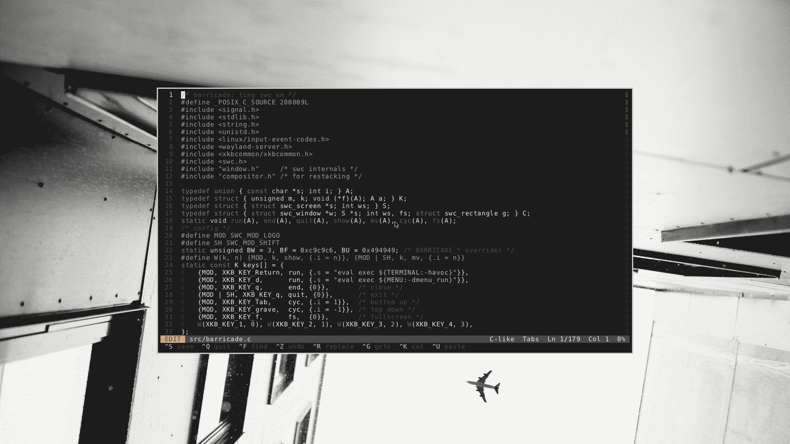

blackout » documentation » barricade
barricade
barricade is the Wayland compositor of blackout. It is built on swc.

features
- Floating windows, moved and resized with the mouse
- Four workspaces
- Focus follows the mouse
- Fullscreen
keys
super + return | terminal |
super + d | launcher |
super + q | close the window |
super + shift + q | quit barricade |
super + tab | raise the bottom window |
super + ` | lower the top window |
super + f | fullscreen |
super + 1-4 | switch workspace |
super + shift + 1-4 | send the window to a workspace |
super + left drag | move |
super + right drag | resize |
super + middle click | lower the window |
super + p | screenshot |
install
On blackout:
# rag a desktop/barricade
$ startw |
On other systems, barricade needs swc with the patches in patches/:
configuration
~/.config/barricade/env:
BARRICADE_BORDER=6
BARRICADE_FOCUS=c9c9c6
BARRICADE_UNFOCUS=494949
TERMINAL=havoc
MENU=dmenu_run
BROWSER=netsurf |
Your own keys go in ~/.config/barricade/keys, starting from /share/barricade/keys:
case $1 in
w) exec netsurf ;;
S-x) exec havoc scrawl ;;
esac |
Wallpaper and screenshots:
$ setwall /share/wallpapers/tower.png
$ setwall '#1a4270'
$ shot file.png |
The built-in keys are in keys[] at the top of barricade.c. US layout only.
|